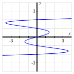

Activity 34.
Consider the curve defined by the equation \(x = y^5 - 5y^3 + 4y\text{,}\) whose graph is pictured in Figure 164.

(a)
Explain why it is not possible to express \(y\) as an explicit function of \(x\text{.}\)
Hint.
Does the graph pass the vertical line test?
Answer.
The graph of the curve fails the vertical line test.
Solution.
Because the graph of the curve fails the vertical line test, \(y\) cannot be a function of \(x\text{.}\) This also confirms our intuition that there is not an algebraic means by which we can rearrange the equation \(x = y^5 - 5y^3 + 4y\) to write \(y\) in terms of \(x\text{.}\)
(b)
Use implicit differentiation to find a formula for \(dy/dx\text{.}\)
Hint.
Note, for instance, that \(\frac{d}{dx}[y^5] = 5y^4\text{.}\)
Answer.
\(\frac{dy}{dx} = \frac{1}{5y^4 - 15y^2 + 4}\text{.}\)
Solution.
We differentiate implicitly, taking the derivative of each side with respect to \(x\text{,}\)
\begin{equation*}
\frac{d}{dx}[x ]= \frac{d}{dx}[y^5 - 5y^3 + 4y]\text{,}
\end{equation*}
and evaluate the elementary derivative on the left and use the sum rule on the right to find that
\begin{equation*}
1 = \frac{d}{dx}[y^5] - \frac{d}{dx}[5y^3] + \frac{d}{dx}[4y]\text{.}
\end{equation*}
By the chain and constant multiple rules, viewing \(y\) as a function of \(x\text{,}\) we now have
\begin{equation*}
1 = 5y^4\frac{dy}{dx} - 15y^2\frac{dy}{dx} + 4\frac{dy}{dx}\text{.}
\end{equation*}
Factoring,
\begin{equation*}
1 = \frac{dy}{dx}(5y^4 - 15y^2 + 4)\text{,}
\end{equation*}
and therefore
\begin{equation*}
\frac{dy}{dx} = \frac{1}{5y^4 - 15y^2 + 4}\text{.}
\end{equation*}
(c)
Use your result from part (b) to find an equation of the line tangent to the graph of \(x = y^5 - 5y^3 + 4y\) at the point \((0, 1)\text{.}\)
Hint.
Remember the meaning of \(\left. \frac{dy}{dx} \right|_{(0,1)}\text{.}\)
Answer.
\(y = -\frac{1}{6}x + 1\text{.}\)
Solution.
To find an equation of the line tangent to the graph of \(x = y^5 - 5y^3 + 4y\) at the point \((0, 1)\text{,}\) we only need the slope of the tangent line. Hence we compute
\begin{equation*}
\left. \frac{dy}{dx} \right|_{(0,1)} = \frac{1}{5 \cdot 1^4 - 15 \cdot 1^2 + 4} = -\frac{1}{6}\text{.}
\end{equation*}
Therefore, the equation of the tangent line is
\begin{equation*}
y - 1 = -\frac{1}{6}(x-0)
\end{equation*}
or \(y = -\frac{1}{6}x + 1\text{.}\)
(d)
Use your result from part (b) to determine all of the points at which the graph of \(x = y^5 - 5y^3 + 4y\) has a vertical tangent line.
Hint.
What is the slope of a vertical line?
Answer.
\((1.418697,0.543912)\text{,}\) \((-1.418697,-0.543912)\text{,}\) \((-3.63143, 1.64443)\text{,}\) and \((3.63143, -1.64443)\text{.}\)
Solution.
Since a line is vertical whenever its slope is undefined, we seek all points \((x,y)\) that make \(\frac{dy}{dx}\) undefined. This will occur precisely when the denominator, \(5y^4 - 15y^2 + 4\text{,}\) is zero. Using a graphing utility or computer algebra system to solve the equation \(5y^4 - 15y^2 + 4 = 0\text{,}\) we find that this happens at the four approximate \(y\)-values \(y \approx \pm 0.543912, \pm 1.64443\text{.}\) For each such value, we use the original equation \(x = y^5 - 5y^3 + 4y\) to find the \(x\)-value of the point. Doing so, we have established that there are four points at which the tangent line is vertical, and they are approximately \((1.418697,0.543912)\text{,}\) \((-1.418697,-0.543912)\text{,}\) \((-3.63143, 1.64443)\text{,}\) and \((3.63143, -1.64443)\text{.}\)